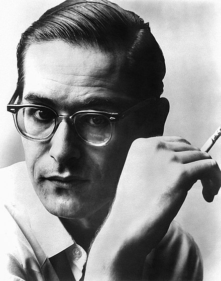

Bill Evans는 웨스트 이스트 쿨 재즈의 대가이며, 그의 대표곡으로는 'I fall in love too easily'가 있다.
Baker earned much attention and critical praise through the 1950s, particularly for albums featuring his vocals (Chet Baker Sings, It Could Happen to You).
Jazz historian Dave Gelly described the promise of Baker's early career as "James Dean, Sinatra, and Bix, rolled into one".
His well-publicized drug habit also drove his notoriety and fame.
Baker was in and out of jail frequently before enjoying a career resurgence in the late 1970s and 1980s.